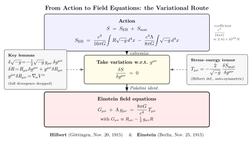

Einstein-Hilbert 作用量怎么变出场方程?
到上一节为止, 我们已经反复看到一个事实: Einstein 场方程 $G_{\mu\nu}=8\pi G T_{\mu\nu}/c^4$ 是这一卷的主角. 它从弱场极限退化成 Newton, 它把 Mercury 进动算到 $43''/$ 世纪, 它的真空波解通过 LIGO 击中我们的探测器. 但如果你回到 1915 年 11 月这一个月, 你会看到一件值得停下来想的事: Einstein 是经过八年的反复试错, 一行一行推出这个方程的; 而几乎同时, 哥廷根的数学家 Hilbert 用变分原理从一个更简洁的起点 — 一个标量作用量 $\int R\sqrt{-g}\,\mathrm{d}^4 x$ — 一步把同一个方程"召唤"了出来.
这一节我们走 Hilbert 那条路. 它是物理里"把一个理论的几乎全部内容塞进一个标量函数"这种结构的极佳例子, 跟 vol-4 里我们处理过的最小作用量原理一脉相承. 这条路的好处是: 它公开告诉你, 引力 Lagrangian 密度只能是 $R$ — Lovelock 定理保证; 它告诉你为什么宇宙学常数 $\Lambda$ 在这个框架里几乎不可避免; 它告诉你能-动张量 $T_{\mu\nu}$ 在场论里有一个干净的几何定义 $T_{\mu\nu} = -(2/\sqrt{-g})\,\delta S_{\rm mat}/\delta g^{\mu\nu}$, 而不是凑出来的某种东西.
一、为什么是 Ricci 标量?
要写一个引力的 Lagrangian 密度, 我们需要的是一个洛伦兹标量 + 关于度规及其导数的本地泛函. 让我们一步步把候选名单收紧.
第一个候选是常数 $\Lambda$. 它本身就是标量, 而且只用到 $g_{\mu\nu}$ 不用任何导数 — 配上体元 $\sqrt{-g}\,\mathrm{d}^4 x$, 给出 $\Lambda\int\sqrt{-g}\,\mathrm{d}^4 x$. 这是宇宙学常数项, 我们一会回到它.
第二个候选必须含度规的导数, 因为没有导数就描述不了曲率. 但 $\partial_\alpha g_{\mu\nu}$ 不是张量 (它依赖坐标系), 所以最低阶能写出的标量必须含两阶导数. 在所有"两阶导数 + 度规"的标量里, 大致只有三类: $g^{\alpha\beta}\partial_\alpha\partial_\beta g_{\mu\nu}\cdot g^{\mu\nu}$ 这类显然不协变的拼法; $R$ — Ricci 标量; 以及更高阶的不变量 $R_{\mu\nu}R^{\mu\nu}$, $R_{\mu\nu\rho\sigma}R^{\mu\nu\rho\sigma}$, 但后两者会让运动方程含四阶导数, 一般有问题.
Lovelock 1971 年证明了一个漂亮定理: 在 4 维, 唯一能由度规及其一二阶导数构造、且变分给出的张量方程满足"二阶、二次、对易"全部条件的, 就是 $G_{\mu\nu}+\Lambda g_{\mu\nu}$. 把这条数学事实倒过来读, 就是 Einstein-Hilbert 作用量
$$ S_{\rm EH} \;=\; \frac{c^4}{16\pi G}\int R\sqrt{-g}\,\mathrm{d}^4 x \;-\; \frac{c^4\Lambda}{8\pi G}\int\sqrt{-g}\,\mathrm{d}^4 x. \tag{1} $$
这里 $R$ 是 Ricci 标量, $g\equiv\det(g_{\mu\nu})$, $\sqrt{-g}$ 是 4 维体元的密度. 系数 $c^4/16\pi G$ 是"约定"出来的 — 选它是为了让弱场极限恰好回到 Newton 引力的常数. 让我们先估这个系数的数量级:
$$ \frac{c^4}{16\pi G} \;=\; \frac{(3\times 10^8)^4}{16\pi\times 6.674\times 10^{-11}} \;\approx\; 2.41\times 10^{42}\,\mathrm{N}. $$
这是一个天文级的数字 — 它告诉你引力的"刚度"有多大: 要想让时空弯出 $R\sim 1$ 的曲率密度, 你得施加 $10^{42}$ 牛级的能-动密度. 反过来, 这也是为什么宏观物体的引力效应那么微弱: 我们日常的 $T_{\mu\nu}$ 在这个标度下完全是涟漪.
二、变分: $\delta S_{\rm EH}/\delta g^{\mu\nu} = ?$
现在做变分. 我们要把 $S_{\rm EH}$ 看成 $g^{\mu\nu}$ 的泛函, 计算 $\delta S_{\rm EH}$ 在度规扰动 $\delta g^{\mu\nu}$ 下的一阶变化, 要求它对任意紧支撑扰动都为零, 由此读出场方程.
关键是三个引理. 引理 (i): 对体元的变分
$$ \delta\sqrt{-g} \;=\; -\frac{1}{2}\sqrt{-g}\,g_{\mu\nu}\,\delta g^{\mu\nu}. $$
这个公式来自 $\det$ 的 Jacobi 公式: $\delta\ln(-g)=g^{\mu\nu}\delta g_{\mu\nu}=-g_{\mu\nu}\delta g^{\mu\nu}$, 再除 2 即得. 引理 (ii): Ricci 张量本身的变分 $\delta R_{\mu\nu}$ 是 Christoffel 符号变分的发散
$$ \delta R_{\mu\nu} \;=\; \nabla_\alpha(\delta\Gamma^\alpha_{\mu\nu}) - \nabla_\nu(\delta\Gamma^\alpha_{\mu\alpha}), $$
这就是Palatini 恒等式. 因为它是协变发散, 当被 $g^{\mu\nu}\sqrt{-g}$ 乘上并积分时, 给出一个全散度 $\nabla_\alpha(\cdots)$, 在紧支撑或合适边界条件下对体积分贡献为零 — 我们就把它丢掉. (严格说还需要加一个 Gibbons-Hawking-York 边界项处理边界, 但本节我们专注体积分.) 引理 (iii): Ricci 标量的变分
$$ \delta R \;=\; R_{\mu\nu}\,\delta g^{\mu\nu} \;+\; g^{\mu\nu}\,\delta R_{\mu\nu}. $$
由这三件事拼起来,
$$ \delta(R\sqrt{-g}) \;=\; \sqrt{-g}\Big(R_{\mu\nu}-\tfrac{1}{2}g_{\mu\nu}R\Big)\,\delta g^{\mu\nu} \;+\; \sqrt{-g}\,g^{\mu\nu}\delta R_{\mu\nu}. $$
第二项是全散度可丢. 第一项的括号正是 Einstein 张量 $G_{\mu\nu}\equiv R_{\mu\nu}-\tfrac{1}{2}g_{\mu\nu}R$. 把它代回 $\delta S_{\rm EH}=0$,
$$ \frac{1}{\sqrt{-g}}\,\frac{\delta S_{\rm EH}}{\delta g^{\mu\nu}} \;=\; \frac{c^4}{16\pi G}\,(G_{\mu\nu}+\Lambda g_{\mu\nu}). \tag{2} $$
纯引力部分 ($\delta g^{\mu\nu}$ 任意, $S_{\rm mat}=0$ 真空) 给出 $G_{\mu\nu}+\Lambda g_{\mu\nu}=0$ — 真空 Einstein 场方程含宇宙学常数. 它的最简单解就是 de Sitter / anti-de Sitter 时空 (常曲率), 第 22 节我们会回到它. 注意 (2) 里出现的 $\Lambda$ 项来自第 (1) 式里那个 $-\Lambda\int\sqrt{-g}$ 的变分: $\delta(-\Lambda\sqrt{-g})=\tfrac{1}{2}\Lambda\sqrt{-g}\,g_{\mu\nu}\delta g^{\mu\nu}$, 与符号约定相洽. 系数 $c^4/16\pi G$ 选得使 (2) 后面接 $-T_{\mu\nu}/2$ 时, 项的常数恰好凑出 $G_{\mu\nu}+\Lambda g_{\mu\nu}=8\pi G T_{\mu\nu}/c^4$.
三、加上物质: $T_{\mu\nu}$ 的几何定义

真实的世界里有物质. 总作用量是 $S=S_{\rm EH}+S_{\rm mat}$, 其中 $S_{\rm mat}=\int\mathcal{L}_{\rm mat}\sqrt{-g}\,\mathrm{d}^4 x$ 是物质场 (标量场、Dirac 场、Maxwell 场……) 的作用量. 物质 Lagrangian 密度依赖 $g^{\mu\nu}$ 通过两条路: (a) 体元 $\sqrt{-g}$, (b) 显式出现的度规分量 (例如 Maxwell 项 $-\tfrac{1}{4}g^{\mu\rho}g^{\nu\sigma}F_{\mu\nu}F_{\rho\sigma}$).
定义
$$ T_{\mu\nu} \;\equiv\; -\frac{2}{\sqrt{-g}}\,\frac{\delta S_{\rm mat}}{\delta g^{\mu\nu}}. \tag{3} $$
这就是能-动张量的 Hilbert 定义. 把 (2) 与 (3) 拼起来, $\delta S/\delta g^{\mu\nu}=0$ 给
$$ G_{\mu\nu}+\Lambda g_{\mu\nu} \;=\; \frac{8\pi G}{c^4}\,T_{\mu\nu}. \tag{4} $$
这就是带宇宙学常数的 Einstein 场方程. 几个值得停下来想的事:
(a) 对称性自动: $T_{\mu\nu}$ 显式对称, 因为 $g^{\mu\nu}$ 对称. 这是 Hilbert 定义远优于 Noether 定义的一点 — 后者得到的"正则能-动张量"不对称, 还要加 Belinfante-Rosenfeld 项才能对称. Hilbert 定义直接拿到对的张量.
(b) 守恒自动: 由 Bianchi 恒等式 $\nabla^\mu G_{\mu\nu}=0$ 和 $\nabla^\mu g_{\mu\nu}=0$, 公式 (4) 自动给出 $\nabla^\mu T_{\mu\nu}=0$. 也就是说, 能-动守恒不是另外加的条件, 它是 Einstein-Hilbert 作用量的规范不变性 (微分同胚不变性) 的 Noether 推论. vol-4 里我们见过类似句式: 时空对称性给出守恒律, 现在升级到 GR 版本.
(c) $\Lambda$ 不可逃: 严格说 $\Lambda$ 项是作用量唯一允许的"零阶项"; 任何对称性论证都不能让它先验为零, 而只能交给观测决定. 1998 年的超新星观测把它定到 $\Lambda\approx 1.1\times 10^{-52}\,\mathrm{m^{-2}}$ (对应宇宙加速膨胀), 这是公式 (4) 中那一项必须保留的实验依据. (Einstein 1917 年加它是为了搞静态宇宙, 1929 年 Hubble 发现宇宙膨胀后他后悔过, 但宇宙最终证明 $\Lambda\ne 0$.)
四、Hilbert 与 Einstein, 11 月那五天
1915 年 11 月是 GR 历史上最戏剧的一个月. Einstein 在前一年的春天搬到 Berlin, 在 1914 年发表的 "Entwurf" 理论里给出过一个不正确的场方程, 整整一年都在试图修补. 1915 年 6 月他到 Göttingen 给 Hilbert 等数学家做了一周的讲座, 把他的工作和遇到的困难全摆出来. Hilbert 这位数学家立刻看出: 这个理论缺一个变分原理的骨架.
11 月份 Einstein 一周一篇, 写了四篇 Akademie 论文, 每一篇都比前一篇接近最终答案. 11 月 18 日他算出 Mercury 进动 $43''/$ 世纪 (那一刻他自己说"我激动得几天没法工作"). 11 月 20 日 — Hilbert 在 Göttingen 提交《物理学的基础 I》(Die Grundlagen der Physik), 用变分原理写下 $\int R\sqrt{-g}\,\mathrm{d}^4 x$, 得到了与最终方程等价的真空形式. 11 月 25 日 Einstein 在 Berlin 提交《引力的场方程》, 给出最终的 $R_{\mu\nu}-\tfrac{1}{2}g_{\mu\nu}R = 8\pi G T_{\mu\nu}/c^4$.
关于"谁先"的争论持续了一个世纪. 现代档案研究 (Corry-Renn-Stachel 1997 关于 Hilbert 校样的工作) 表明: Hilbert 11 月 20 日的提交里使用的是变分原理但没有写出"完整的、迹反向的" Einstein 张量形式; 现在通行的看法是 — 物理上, Einstein 是引力理论的真正发现者; 数学上, Hilbert 提供了那个最简洁的作用量框架. 两个人的工作互补而非竞争: 没有 Einstein 的物理直觉 ($g_{\mu\nu}$ = 引力, 等效原理, Mercury 进动), 没有人会去找这样的方程; 没有 Hilbert 的数学结构, 这个方程只是又一组偏微分方程, 不是从一个标量原理出发的整洁理论.
五、$\Lambda$ 项的代数与一个数字
把 $\Lambda$ 项的代数写一遍, 顺便看它在数字上的份量. 第 (1) 式第二项 $-(c^4\Lambda/8\pi G)\int\sqrt{-g}\,\mathrm{d}^4 x$ 在 $g^{\mu\nu}$ 下的变分
$$ \delta\Big[-\frac{c^4\Lambda}{8\pi G}\sqrt{-g}\Big] \;=\; -\frac{c^4\Lambda}{8\pi G}\cdot\Big(-\tfrac{1}{2}\sqrt{-g}\,g_{\mu\nu}\delta g^{\mu\nu}\Big) \;=\; \frac{c^4\Lambda}{16\pi G}\sqrt{-g}\,g_{\mu\nu}\,\delta g^{\mu\nu}. $$
把它与 EH 项变分 (公式 2 里那一行) 相加, 系数前面 $c^4/16\pi G$ 提出来后, 给出场方程左边的 $G_{\mu\nu}+\Lambda g_{\mu\nu}$. 注意符号: 我们在 (1) 里取 $-\Lambda$ 系数恰好让它在场方程里走到 $+\Lambda g_{\mu\nu}$ 的位置. 不同教科书用不同的符号约定, 但本质都一样.
把数字代进去. 现代宇宙学测得 $\Lambda\approx 1.11\times 10^{-52}\,\mathrm{m}^{-2}$ (Planck 2018). 等价的真空能密度
$$ \rho_\Lambda c^2 \;=\; \frac{c^4\Lambda}{8\pi G} \;\approx\; 5.36\times 10^{-10}\,\mathrm{J/m^3}. $$
大约相当于每立方米一颗质子的能量等价 — 远远小于地球大气一立方米里的能量, 但累积到整个可观测宇宙就主导了膨胀动力学 (约占总能量密度的 68%). 这个 $\rho_\Lambda$ 与QFT 真空零点能朴素估算 ($\sim M_{\rm Planck}^4$) 之间差了 120 个数量级 — 这是著名的"宇宙学常数难题". 它告诉我们: 公式 (4) 里那个看上去无害的 $\Lambda$ 项, 是 21 世纪基础物理最尖锐的悬案之一. 我们暂且接受它的存在, 等量子引力一节再议.
最后值得指出: 同一个变分框架里, 你可以系统加项. 加 $\alpha R^2 + \beta R_{\mu\nu}R^{\mu\nu}$ 给出 $f(R)$ 引力或 Stelle 高阶引力 — 它们运动方程含四阶导数, 在低能等价于 Einstein 引力 + 标量场 (Starobinsky 暴胀模型即此类). 加 $\xi\phi^2 R$ 给出非最小耦合标量场 (Brans-Dicke). 加 Gauss-Bonnet 项 $\mathcal{G}=R^2-4R_{\mu\nu}R^{\mu\nu}+R_{\mu\nu\rho\sigma}R^{\mu\nu\rho\sigma}$ 在 4 维是拓扑项, 不影响场方程, 但在更高维 (弦论 effective action) 里贡献新的张量结构. 整套引力修正论是变分原理给的同一棵树上的支条. Lovelock 定理告诉你 4 维主干唯一选择; 其他都是分枝.
小结
这一节我们把 Einstein 场方程从 1915 年 Einstein 那条物理直觉的路, 翻译到 1915 年 Hilbert 那条变分原理的路: 作用量 $S_{\rm EH}=(c^4/16\pi G)\int R\sqrt{-g}\,\mathrm{d}^4 x$ 加上物质项 $S_{\rm mat}$ 与一个无害的零阶 $\Lambda$ 项, 对度规 $g^{\mu\nu}$ 取变分, 用 $\delta\sqrt{-g}=-\tfrac{1}{2}\sqrt{-g}\,g_{\mu\nu}\delta g^{\mu\nu}$、Palatini 恒等式以及 $\delta R = R_{\mu\nu}\delta g^{\mu\nu}+\,$全散度三件法宝, 落到 $G_{\mu\nu}+\Lambda g_{\mu\nu}=8\pi G T_{\mu\nu}/c^4$. 这条路告诉我们: 引力的 Lagrangian 密度只能是 $R$ (Lovelock 定理); 能-动张量的几何定义 $T_{\mu\nu}=-(2/\sqrt{-g})\delta S_{\rm mat}/\delta g^{\mu\nu}$ 自动对称, 自动守恒 (Bianchi 恒等式); 系数 $c^4/16\pi G\approx 2.41\times 10^{42}\,\mathrm{N}$ 是引力的"刚度", 解释了为什么宏观引力效应那么微弱; 宇宙学常数 $\Lambda\approx 1.11\times 10^{-52}\,\mathrm{m^{-2}}$ 在变分框架里几乎不可逃, 现代观测把它钉死. 1915 年 11 月那五天, Einstein 与 Hilbert 从两条路汇合到了同一行方程. 下一节我们就用这个方程的最简单非平凡解 — Schwarzschild — 直接造一个黑洞, 把"事件视界"从一个名词变成一个具体半径.
▲